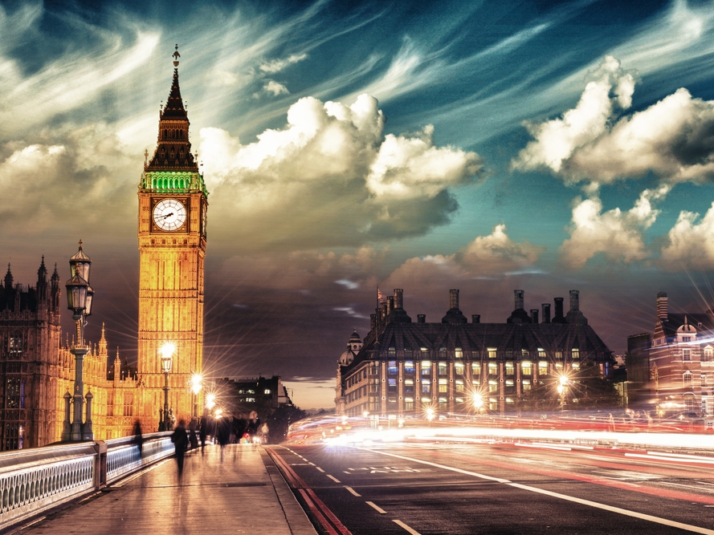
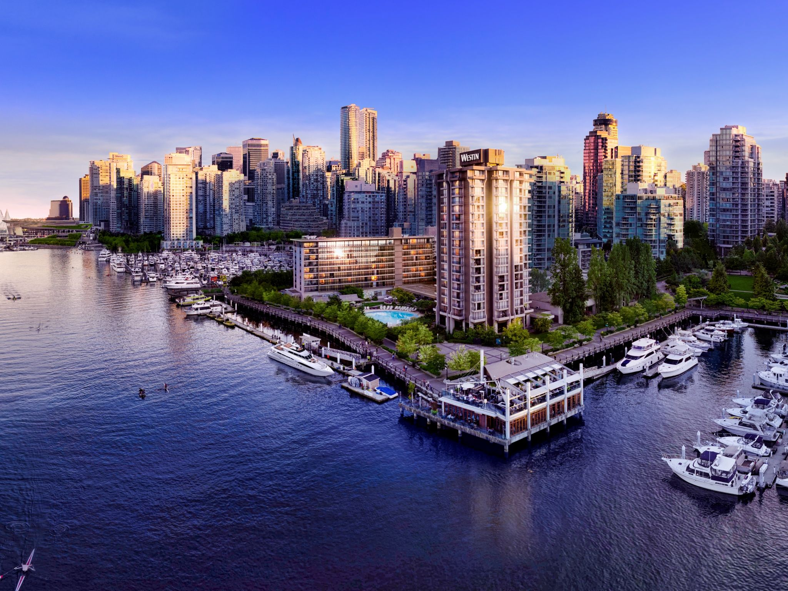
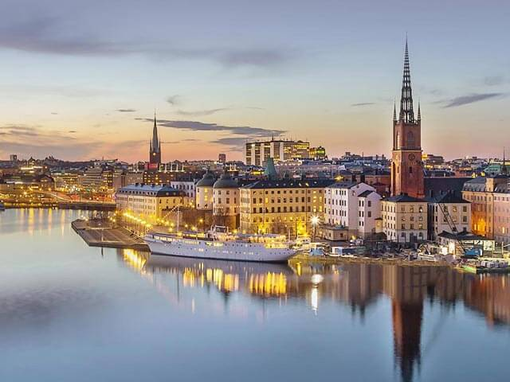

Adam Smith
Programmer in training @Le Wagon
"I code, therefore I am"
|  |
LondonThe Romans built a city called Londinium on the River Thames in the year AD 43 The name Londinium (and then 'London') came from the Celtic language of the Ancient Britons. ... It became the largest city in England. |

|
SydneySydney, city, capital of the state of New South Wales, Australia. Located on Australia's southeastern coast, Sydney is the country's largest city and, with its magnificent harbour and strategic position, is one of the most important ports in the South Pacific. |
|  |
VancouverThe city takes its name from George Vancouver, who explored the inner harbour of Burrard Inlet in 1792 and gave various places British names. The family name Vancouver itself originates from the Dutch "Van Coevorden", denoting somebody from the city of Coevorden, Netherlands. |
Cape TownCape Town (Afrikaans: Kaapstad, [ˈkɑːpstat]) is a coastal city in South Africa. It is the second-most populous urban area in South Africa after Johannesburg. ... As the seat of the Parliament of South Africa, it is also the legislative capital of the country. |
|
|  |
StockholmStockholm is located on Sweden's south-central east coast, where the freshwater Lake Mälaren — Sweden's third largest lake — flows out into the Baltic Sea. The central parts of the city consist of fourteen islands that are continuous with the Stockholm archipelago. |